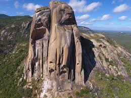
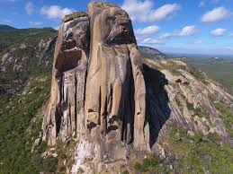

Luar do Meu Sertão
Este é o Hotel Luar do meu sertão, um lindo, divertido e inesquecível lugar, ideal para aqueles que buscam conforto e seguranç, atendendo aos mais variados gostos. Localizado no bairro do Cedro em Quixada, contacom uma infraestrutura inovadora, além de diversos serviços para os clientes, possuindo várias instalações para todos os tipos de serviços desde piscinas a salões de jogos, ideal para famílias e casais, venha conferir! Você vai adorar o que preparamos para você.
Atrativos da Região
Nossas instalações por mais atrativas que sejam não são as únicas coisas capazes de despertar o interesse
de visitantes. A região conta, por si só, com vários atrativos tanto geológicos quanto por meio de práticas
esportivas e vários pontos turísticos.
Dentre os principais pontos turísticos de Quixadá estão:
Cada uma dessas atrações possui suas características e belezas. Imagine fazer trilha pela pedra da Galinha Choca a mais famosa atração turística de Quixadá, e ainda poder ver o Açude do Cedro, uma das mais antigas construções de Quixadá, ou mesmo tirar uma foto diante dos incríveis regolitos e Incelbergues da região, concerteza são memórias que qualquer um quer para si.
Imagens pedra da Galinha Choca

Imagens Açude Cedro

.jpg)
.jpg)
Imagens de Inselbergues

.jpg) 

Contatos
- Telefone: (85)993456611
- Email: luadsomeusertao@gmail.com